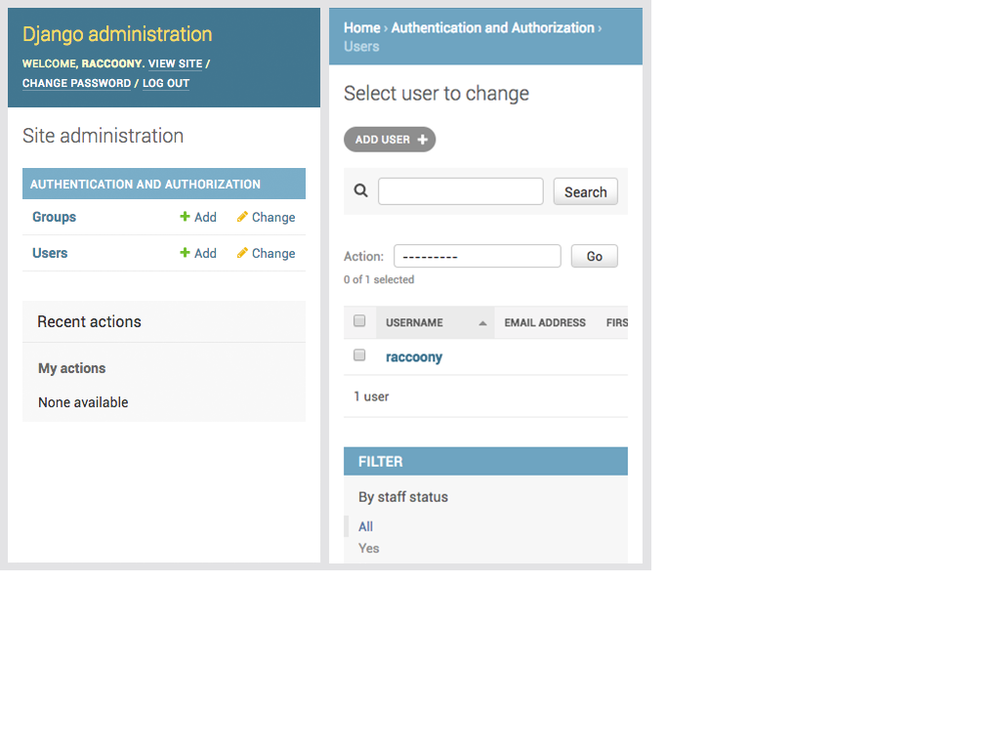
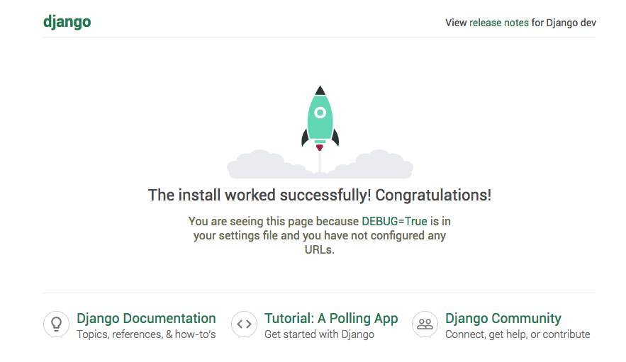

사진 출처: Pinkie Pie by Daniel Chang
Django 2.0이 드디어 출시되었습니다. 첫 2.x 버전인데요. 이 글에서는 Django 2.0에 추가된 기능과 바뀐점을 간략하게 알아보려 합니다. Django 공식 릴리스 노트를 참고하였습니다. 주의! 릴리스 노트를 모두 번역하지는 않았습니다. 대신, 언뜻 이해가 되지 않은 부분엔 제 나름의 설명도 추가하였습니다.
하위 버전들의 보안 업데이트도 함께 올라왔습니다.
2018-01-10 updated.
url 라우팅 문법에서 예시 코드에 오류가 있었습니다. 2.0에서 추가된 새 문법을 사용하려면,url()메서드가 아닌path()메서드를 사용해야 합니다. 임동현 님 고맙습니다. ^^
2017-12-03 updated.
User.is_authenticated()메서드와User.is_anonymous()메서드에 대해 잘못 번역한 내용을 수정하였습니다. 김남홍 님 고맙습니다. ^^
파이썬 호환성
Django 2.0은 파이썬 3.4, 3.5, 3.6에서 작동합니다. 각 버전별 마지막 릴리스를 사용하기를 추천합니다.
Django 1.11.x는 파이썬 2.7을 지원하는 마지막 버전입니다.
Django 2.0은 파이썬 3.4를 지원하는 마지막 버전입니다. Django 2.0의 수명 주기는 2019년 4월이므로, 이후에도 파이썬 3.4를 사용해야 한다면 수명주기가 2020년 4월까지인 Django 1.11 LTS를 사용하세요. (참고로 파이썬 3.4의 수명주기는 2019년 4월까지입니다.)
서드파티 라이브러리의 Django 하위 호환성에 대해
Django 2.0에 맞춰 서드파티 라이브러리를 개발하고 있다면, Django 1.11 이전의 모든 버전에 대한 지원을 중단할 것을 제안합니다.
새 기능
URL 라우팅 문법 간소화
추가된 django.urls.path() 함수를 사용하면, 이렇게 조금 복잡했던 URL 라우팅 문법을
url(r'^book/(?P<pk>/d+)/$', views.book_detail),
이렇게 읽기 좋게 바꿀 수 있습니다.
path(r'^book/<int:pk>/', views.book_detail),
새 문법에서는 URL 파라미터의 타입을 강제합니다.
django.conf.urls.url() 함수는 django.urls.re_path() 함수로 바뀌었습니다. django.conf.urls.include() 함수는 django.urls.include()로 옮겨졌습니다.
새 URL 디스패처에 대해서는 URL dispatcher 문서를 참고하세요.
모바일 친화적인 관리자 화면
관리자 화면이 반응형 레이아웃으로 바뀌며, 대다수 모바일 디바이스를 지원합니다.

Window 데이터베이스 함수
쿼리셋에 OVER 절을 추가할 수 있는 Window 표현식이 추가되었습니다.
CumeDist(*expressions, **extra)클래스는 누적 분포를 계산합니다.FirstValue(*expressions, **extra)클래스는 해당 윈도우의 첫 행을 반환합니다. (없으면None)Lag(expression, offset=1, default=None, **extra클래스는offset만큼 앞에 있는 값을 구합니다.offset에 해당하는 값이 없으면default값을 반환합니다.
예)
| 년도 | 판매액 | Lag(offset=1, default=0) |
|---|---|---|
| 2015 | 13,000 | 0 |
| 2016 | 15,000 | 13,000 |
| 2017 | 20,000 | 15,000 |
LastValue(*expressions, **extra)클래스는 해당 윈도우의 마지막 행을 반환합니다.Lead(expression, offset=1, default=None, **extra)클래스는offset만큼 뒤에 있는 값을 구합니다.offset에 해당하는 값이 없으면default값을 반환합니다.
예)
| 년도 | 판매액 | Laed(offset=1, default=0) |
|---|---|---|
| 2015 | 13,000 | 15,000 |
| 2016 | 15,000 | 20,000 |
| 2017 | 20,000 | 0 |
NthValue(expression, nth=1, **extra)클래스는 해당 윈도우의nth번째(항상 자연수) 행을 반환합니다. (값이 존재하지 않을 경우, 데이터베이스에 따라 다르게 작동합니다.)Ntile(num_buckets=1, **extra)클래스는 해당 윈도우를num_buckets만큼 분할한 결과를 반환합니다.RowNumber(*expressions, **extra)클래스는 해당 윈도우의 정렬 방식에 따라 행 번호를 계산합니다.- 이후에 등장하는 Rank 관련 클래스의 결과는 다음 표와 같습니다.
예)
| 행 | 값 | Rank | 계산 결과 | PercentRank | DenseRank |
|---|---|---|---|---|---|
| 1 | 15 | 1 | (1 - 1) / (7 - 1) | 0.0000 | 1 |
| 2 | 20 | 2 | (2 - 1) / (7 - 1) | 0.1666 | 2 |
| 3 | 20 | 2 | (2 - 1) / (7 - 1) | 0.1666 | 2 |
| 4 | 20 | 2 | (2 - 1) / (7 - 1) | 0.1666 | 2 |
| 5 | 30 | 5 | (5 - 1) / (7 - 1) | 0.6666 | 3 |
| 6 | 30 | 5 | (5 - 1) / (7 - 1) | 0.6666 | 3 |
| 7 | 40 | 7 | (7 - 1) / (7 - 1) | 1.0000 | 4 |
Rank(*expressions, **extra)클래스는 해당 윈도우에서 순위를 계산합니다. (공동 순위인 경우 다음 순위가 밀립니다.)PercentRank(*expressions, **extra)클래스는 해당 윈도우에서 백분위((rank - 1) / (total rows - 1))를 계산합니다.DenseRank(*expressions, **extra)클래스는Rank함수와 같지만 공동 순위를 하나로 취급합니다.- 자세한 내용은 window 함수 문서와 aggregation 함수 문서를 참고하세요.
사소한 변경
django.contrib.admin
ModelAdmin.autocomplete_fields 속성과 ModelAdmin.get_autocomplete_fields() 메서드를 사용하면 ForeignKey나 ManyToManyField에 대해 Select2 위짓을 적용할 수 있습니다.
django.contrib.auth
PBKDF2 비밀번호 해셔의 기본 이터레이션 횟수가 3만 6천 회에서 10만 회로 늘었습니다.
django.contrib.gis
- MySQL을 위해
AsGeoJSON함수와GeoHash함수,IsValid함수,isvalid룩업,distance룩업을 추가하였습니다. - PostGIS와 SpatialLite를 위해
Azimuth함수와LineLocatePoint함수가 추가되었습니다. - 이 외의 변경 사항은 Django 2.0 릴리스 노트의 django.contrib.gis 항목을 참고하세요.
django.contrib.postgres
ArrayAgg함수에distinct인자를 사용하여, 중복 값을 없앨 수 있습니다.- UUID 버전 4를 리턴하는
RondomUUID함수가 추가되었습니다. - 이 외의 변경 사항은 Django 2.0 릴리스 노트의 django.contrib.postgres 항목을 참고하세요.
캐시
cache.set_many()함수가 캐시에 추가하다가 실패한 키의 목록을 리턴합니다.
폼
SplitDateTimeWidget과SplitHiddenDateTimeWidget에date_attrs와time_attrs인자가 추가되었습니다. 이 인자들을 사용하면,DateInput위짓과TimeInput위짓의 속성을 나누어 가져올 수 있습니다.- 폼 에러를 JSON 형태로 반환하는
Form.errors.get_json_data()메서드가 추가되었습니다.
관리용 커맨드
loaddata명령에서 표준 입력을 받습니다.- 이 외의 변경사항은 Django 2.0 릴리스 노트의 관리용 커맨드 항목을 참고하세요.
마이그레이션
squashmigrations명령에, 합쳐진 마이그레이션 파일의 이름을 지정할 수 있는--squashed-name옵션이 추가되었습니다.
모델
- 문자열 안에서 특정 문자열의 위치를 알아낼 수 있는, StrIndex 데이터베이스 함수가 추가되었습니다.
from django.db.models import Value as V
from django.db.models functions import StrIndex
Book.objects.create(title="The Hitchhiker's Guide to Python")
Book.objects.annotate(
python_index=StrIndex('title', V('Python'))
).get().python_index # 26
QuerySet.earliest()메서드와QuerySet.latest()메서드,Meta.get_latest_by옵션에서 여러 필드 정렬을 지원합니다.DateField나DateTimeField에서 분기 정보를 알아내는ExtractQuarter함수와quearter룩업이 추가되었습니다.DateField나DateTimeField에서 분기의 첫 날까지만 잘라내는TrauncQuarter함수가 추가되었습니다.- PostgresSQL과 Oracle 환경이라면,
QuerySet.select_for_update()메서드를 사용할 때select_related()로 연결된 모든 테이블을 잠그는 대신, 새로 추가된of인자를 사용하여 특정 테이블의 해당 행만 잠글 수 있습니다. - 새로 추가된
filter인자를 사용하면 여러 Aggregation에서 한 필드에 대한 조건을 추가할 수 있습니다. QuerySet.values_list메서드에 새로 추가된named인자를 사용하여, 결과 값을 네임드 튜플로 변환할 수 있습니다.- 쿼리셋에
ON절을 추가할 수 있는FilteredRelation클래스가 추가되었습니다. - 이 외의 변경사항은 Django 2.0 릴리스 노트의 Models 항목을 참고하세요.
페이지네이션
- 새로 추가된
Paginator.get_path메서드는 잘못된 페이지 번호를 적절히 제어합니다. (숫자가 아닌 경우엔 첫 페이지를 리턴하고, 음수나 마지막 페이지보다 큰 숫자인 경우엔 마지막 페이지를 리턴합니다.)
요청과 응답
runserver로 실행되는 웹 서버가 HTTP 1.1을 지원합니다.
하위 호환이 중단된 기능
바이트스트링 지원 삭제
파이썬 2를 지원하지 않음에 따라 바이트스트링은 오직 입출력에서만 사용합니다.
데이터베이스 백엔드 API
- 자세한 변경 사항은 Django 2.0 릴리스 노트의 데이터베이스 백엔드 API 항목을 참고하세요.
Oracle 11.2 지원 중단
Oracle 11.2의 공식 지원이 2020년 12월에 끝나며, Django 1.11의 공식 지원이 2020년 4월에 끝나니 시점이 비슷합니다. 따라서 Django 2.0은 Oracle 12.1 이상만 지원합니다.
MySQL 격리 수준(isolation level)의 기본값이 read committed로 변경
MySQL의 기본 값인 repeatable read가 Django에서 데이터 손실을 발생시키는 문제가 있었나 봅니다. 다른 값을 사용하고 싶다면 Django 공식 문서의 Databases 페이지에서 Isolation level 항목을 참고하세요.
AbstractUser.last_name의 max_length가 150으로 감소
자세한 내용은 lqez님이 작성하신 The length of Django username 블로그 글(우리말)을 참고하세요.
슬라이싱(slicing) 이후 QuerySet.reverse() 메서드와 last() 메서드 금지
쿼리셋에 슬라이싱을 적용한 이후에는 reverse() 메서드와 last() 메서드를 사용할 수 없습니다.
SQLite에서 참조키(Foreign Key) 강제를 지원
SQLite에 쌓인 기존 데이터를 사용하려면 Django 2.0 릴리스 노트의 SQLite 참조키 관련 항목을 참고하세요.
이 외의 변경사항은 Django 2.0 릴리스 노트의 하위 호환이 중단된 기능 항목을 참고하세요.
중단 예정인 기능
Field.from_db_value()와Expression.conver_value()의context인자가 (Django 3.0 이후) 사라질 예정입니다.
사소한 수정
django.db.backends.postgresql_psycopg2대신 Django 1.9에서 추가된django.db.backends.postgresql을 사용하세요.django.shortcuts.render_to_response()대신django.shortcuts.render()를 사용하세요.QuerySet.earliest()메서드와QuerySet.latest()메서드에서 사용하던field_name인자가 중단될 예정입니다..earliest(field_name='title')대신.earliest('title')처럼 사용하세요.- 이 외의 변경사항은 Django 2.0 릴리스 노트의 사소한 수정 항목을 참고하세요.
삭제된 기능
django.dispatch.signals.Signal.disconnect()에서 사용하던weak인자가 삭제되었습니다.django.db.backends.base.BaseDatabaseOperations.check_aggregate_support()가 삭제되었습니다.django.forms.extras패키지가 삭제되었습니다.assignment_tag헬퍼가 삭제되었습니다.ForeignKey필드와OneToOneField필드의on_delete인자에 대해서도 마이그레이션이 필요합니다.django.db.models.fields.add_lazy_relation()이 삭제되었습니다.include()메서드에 사용하던app_name인자가 삭제되었습니다.makemigrations명령에서 사용하던--exit옵션이 삭제되었습니다.shell명령에서 사용하던--play옵션이 삭제되었습니다.CommaSeparatedIntegerField필드가 삭제되었습니다.django.core.urlresolvers모듈은django.urls모듈로 옮겨갑니다.Context.has_key()메서드가 삭제되었습니다.- MySQL의
__search룩업이 삭제되었습니다. User.is_authenticated()메서드와User.is_anonymous()메서드가 사라집니다. 해당 속성을 사용하세요.FileField필드의get_directory_name()메서드와get_filename()메서드가 삭제되었습니다.- 옛날 방식의 미들웨어 설정인
settings.MIDDLEWARE_CLASSES가 삭제되었습니다. - 이 외의 삭제된 기능들은 Django 2.0 릴리스 노트의 삭제된 기능 항목을 참고하세요.
One More Thing!
Django 2.0 릴리스 노트에 언급되지는 않았지만, Django를 처음 실행했을 때 보여주는 화면이 예뻐졌습니다. :)

재미 없는 It Works! 문구 대신 예쁜 로켓을 보여주네요. 그럼, Django 2.0과 함께 즐거운 프로그래밍이 되시길 바랍니다.